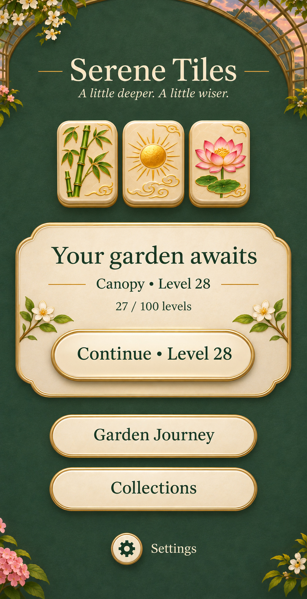
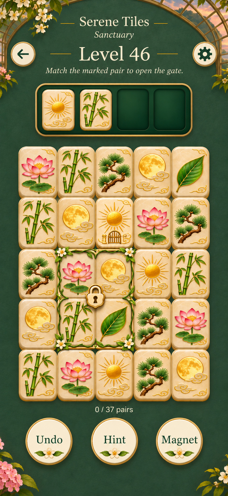

A collection that feels like you
Choose a tile collection while preserving the same puzzle and progress.
A quiet garden. A sharper mind.
Place matching tiles next to each other. Make room for your next move. Turn a moment of calm into a journey worth mastering.
Explore the Garden Journey →100 levels · Five chapters · Preparing for release

A glimpse of the next chapter01 / Room to grow
Four tray spaces. Adjacent pairs. A hundred ways to think ahead. Each chapter adds new dependencies and choices, not just more tiles.
100 LEVELS · FIVE CHAPTERS · PRE-RELEASE
All 100 puzzles have a verified solution without boosters. Difficulty balance is still being playtested before release.

02 / Thoughtful by design
Discover delayed partners, layered routes and vine gates as the journey unfolds. A good next move leaves room for the one after it.
The sequence is clear: lift, travel, land, then resolve. Matching tiles share a readable moment before they disappear.
Clear a level to keep moving. Return for optional mastery when you want a deeper challenge, without making mastery a gate.
The current build is being tested. App Store availability has not yet been announced.
03 / Make yourself at home
Keep the things that make the garden yours. The expanded journey brings them together without letting appearance or language change the challenge.
Choose a tile collection while preserving the same puzzle and progress.
English · Deutsch · Français · Italiano · Español · हिन्दी
Language choices are present in the reviewed app. Translation coverage is being validated.Independent music and sound preferences, with a reduced-motion option in the new experience.
Every fresh attempt starts with 10 Undo, 3 Hint and 2 Magnet uses. Restart resets them; resuming preserves what remains.
04 / Your privacy
Play without an account or advertisements. Your progress, preferences and optional player profile are saved on your device, not on developer-operated servers.
Our full policy explains local saves, device backups, Apple services, deletion and how this website works.
Read the full privacy policyA few things worth knowing
Later chapters introduce delayed partners, route choices, tray pressure and explicit vine gates. Zenith combines familiar dependencies. The goal is meaningful decisions, not simply a bigger board.
Tiles enter the tray in order. Only adjacent matching tiles clear: A–B–A stays, while A–B–A–A clears the last pair. Four unmatched tiles fill the tray and end the attempt. Hint and Magnet work with the newest tray tile. Fresh attempts reset your booster allowances.
Core gameplay works offline. There is no login, advertising, in-app purchasing or developer-operated cloud sync in the current build. Progress and preferences stay on your device. Read our privacy policy for details, including device backups and Apple services.
No. Clearing a level advances your journey. Mastery is an optional reason to replay.
Serene Tiles is currently being prepared and tested for release. It does not announce a release or provide an App Store download.
A small pause. A meaningful next step.